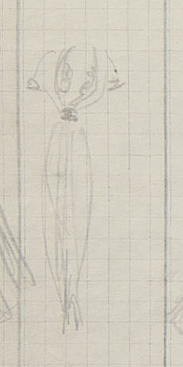
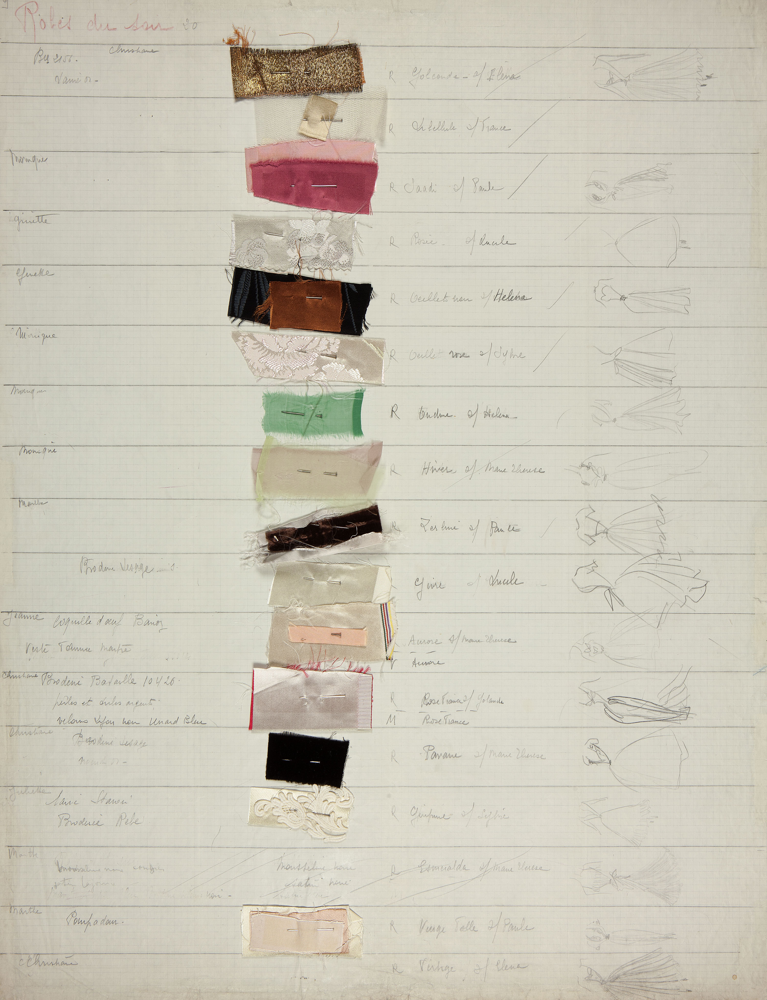

Livre de fabrication
The first three Dior collections had registers with the suppliers' names and units required to make each design.
Dior Héritage Collection, Paris


© Christian Dior



Saadi of Shiraz was a famous Iranian poet. This dress is embroidered with Persian style motifs and has a draped skirt that looks deceptively simple.
Photos Laziz Hamani


Above: The skirt is cut in very long panels, which wrap and tie in the back to create a full hip. The weight and slip of the satin adds to the complexity of the cut and construction.


Looped hand-stitches of orange silk provide an accent of colour and lie beneath the transparent sequins and silver-lined beads that are embroidered over them.
Photos Laziz Hamani


Embroidery design and application by Bataille:
- 5 sizes of transparent sequins
- 2 sizes of crystals
- 2 sizes of pearls
- 2 sizes of silver-lined bugle beads